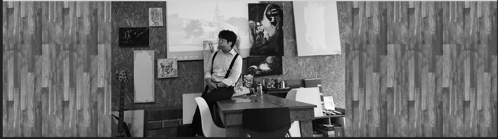
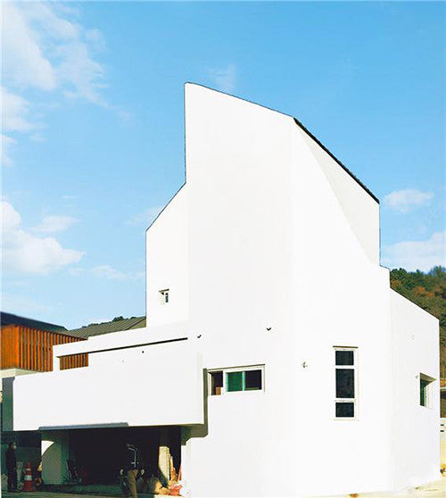

카테고리
 이번 주의 작가
엘 리시츠키 (1890–1941)
1편 · 그림을 구조로 그린 사람
읽기 →
이번 주의 작가
엘 리시츠키 (1890–1941)
1편 · 그림을 구조로 그린 사람
읽기 →
르듀종의 건축과 미술 — 마지막 겨울 연재
전체 보기 →- 예배당 왜 커다랗게 지을 수 밖에 없을까? 우리가 몰랐던 진실 - 1더 복잡한 교회내 사회적, 심리적 요인이 작용합니다
- 지하 예배당은 되도록 피해주세요지하층이 꼭 필요한지 고민해 볼 필요가 있습니다
칼럼
전체 보기 →
이번 주의 작가
엘 리시츠키 (1890–1941)
1편 · 그림을 구조로 그린 사람
읽기 →

하나의 이름이 브랜드가 되는 데는 시간이 필요합니다. 우리는 아직 그 시간을 쌓는 중입니다.
2017년의 첫 도면부터 오늘의 작업실까지, 남은 것은 완성된 건물이 아니라 손에 익은 방식입니다. 해마다 하나의 장(章)을 더합니다 — 도면 하나, 그림 하나, 그리고 누군가의 하루를 조금 가볍게 만드는 도구 하나.
경사지에 앉은 단독주택. 잘린 지붕선이 남쪽 빛을 안으로 끌어들이고, 아래층 그림자는 작업 공간이 됩니다. 도판은 작품 페이지에서 이어집니다.
